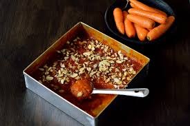

1. First, heat a generous amount of ghee in a thick-bottomed pan on low flame. Add sooji (semolina) slowly into the hot ghee and roast it continuously while stirring gently. Roasting the sooji properly is very important because it gives the halwa a rich aroma, golden color, and delicious taste. Continue roasting until the sooji becomes light golden and releases a pleasant fragrance throughout the kitchen.
2. In another vessel, boil water or milk along with sugar while stirring continuously until the sugar dissolves completely. Add cardamom powder and saffron strands into the liquid to enhance the flavor and aroma. The warm sweet liquid helps the roasted sooji cook smoothly and gives the halwa a soft and rich texture.
3. Slowly pour the hot sugar mixture into the roasted sooji while stirring continuously to avoid lumps. Be careful during this step because the mixture may splutter due to heat. Keep mixing properly so the sooji absorbs the liquid evenly and starts becoming soft, fluffy, and thick.
4. Continue cooking the halwa on low flame while stirring continuously so it does not stick to the bottom of the pan. As the mixture cooks, it becomes thicker and starts leaving the sides of the pan. The ghee slowly separates, giving the halwa a glossy and rich appearance.
5. Heat a small amount of ghee in another pan and fry cashew nuts, almonds, pistachios, and raisins until golden brown. Add these roasted dry fruits into the halwa mixture and mix gently. The dry fruits add crunchiness, richness, and festive flavor to the dessert.
6. Add a few drops of rose essence or extra saffron strands for additional aroma and royal flavor. Mix everything evenly so the sweetness, fragrance, and dry fruits spread throughout the halwa. The texture should become smooth, soft, and rich without becoming too dry.
7. Transfer the prepared halwa into a serving bowl and garnish with extra chopped pistachios, almonds, and saffron strands for an attractive presentation. The rich aroma of ghee, cardamom, and roasted sooji makes the dessert look and smell extremely delicious.
8. Finally, serve the special halwa hot during festivals, celebrations, family gatherings, or special occasions. Its soft texture, rich sweetness, roasted flavor, and crunchy dry fruits make halwa one of the most loved traditional Indian desserts enjoyed by people of all ages.
